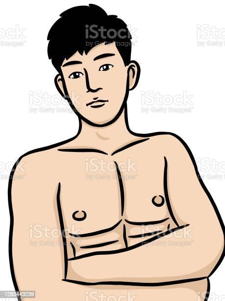
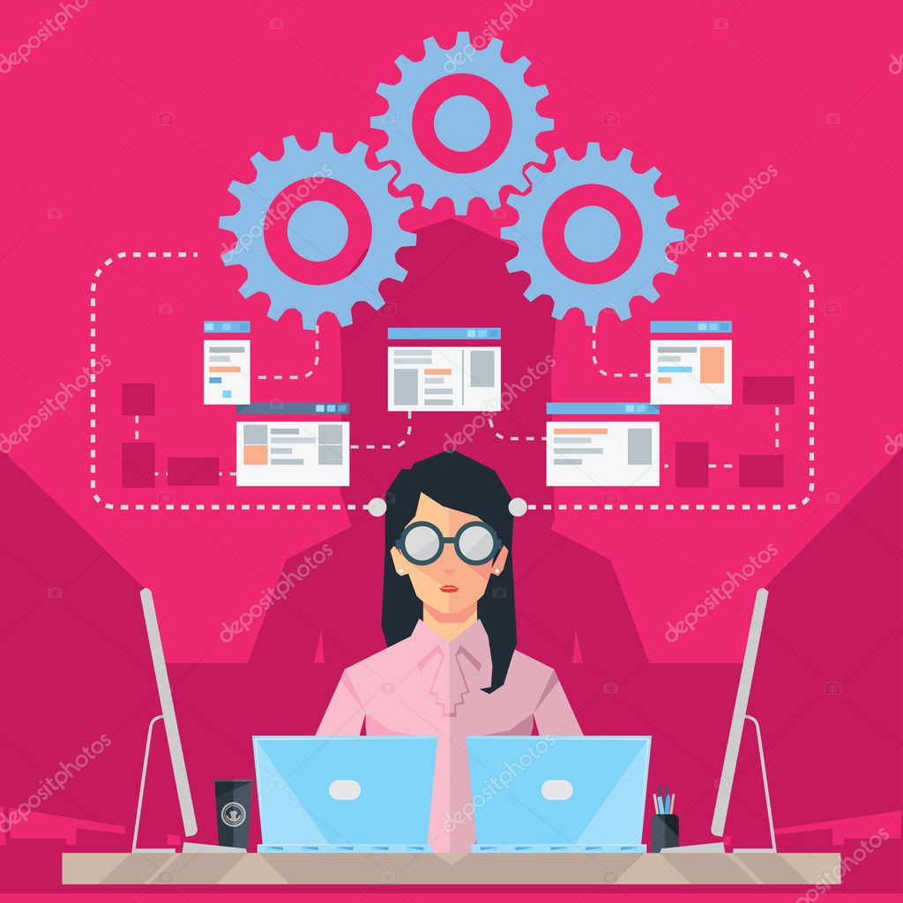
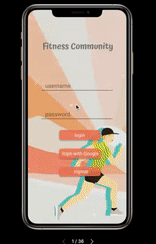

Fitness Community
Team Members: Yukan Zhang, Chenqing Ji, Mengshi Liang
Problem to Solve
During and after the pandemic, more people started to exercise at home. The problem is that some of them lost their motivations to go to the gym because of lack of companion and/or social distancing, while others found it difficult to work out at home without professional help. People who had the motivations to go to the gym might also have to choose to exercise at home or outdoor due to the massive gym closure during the pandemic.
Our solution to this problem is to design a mobile app that would combine the workout training tutorial sharing feature, diet plan recommendation feature and calendar/workout event reminder feature, It would also connect the fitness enthusiasts together to form a social community and motivate each other.
A description of the methods
We first came up with a project proposal that described in detail the user need we were attempting to address, our initial ideas about how we might address that need, a sense of the design activities we will undertake, and a description of what we imagine as our final product.
We also conducted a competitor analysis that compared various approaches or differences.
After that, we conducted a user research by interviewing with 9 different participants. We hoped that after the user research we could observe the user needs in more detail. During the user research process,
we first came up with an interview protocol that would guide us to interview the partcipants with all the meaningful questions.
Then, we used Miro to create an affinity diagram, which organized the participants' responses into groups.
After that, we came up with 3 different personas of our potenrial users based on the groupings we got from the affinity diagram.
Then, we came up with several user stories based in user research to represent the functionality of our system in a user-centric way.
Based on the user stories, we then built our wireframes in Figma to visualize the functionality of our system and asked for 6 different users to test and evaluate our wireframes.After making changes based on the user evaluation, we then designed the high-fidelity mockup in Figma to give it a more realistic impression of how the end product will look like.
Finally we conducted a heuristic evaluation on the hi-fidelity mockup to evaluate the usability of our prototype, and made final changes to our prototype as we found usability issues in our protoptype.
Our Works
-
Competitive analysis
Peloton
Peloton, an indoor and outdoor workout app, is best known for its sessions led by professional coaches, with various activities such as bicycle, treadmill, yoga, and HIIT etc.
Mirror
Mirror is a Peloton parallel product. Like Peloton’s bike and treadmill system, an equipment is needed for its online programs. It has its own professional coaches and allows the users to simultaneously watch the instructor and check out their own reflection. The users could monitor their own forms through the Mirror system.
Instagram
Professional coaches and fitness enthusiasts host the live classes on Instagram, and the followers can learn and communicate with each other during the Live.
In order to meet the urgent needs of people who want to workout at home and encourage other people to exercise during the pandemic, various systems helping achieve this goal emerge and become popular. They try to meet the needs of people at different ages, with different incomes and preferences.
Both of the first two systems above need to purchase equipment and memberships. As to the low income people, such as students, it is not so friendly.
Equipment is a big investment with high risk, even the monthly payment would be a considerable expense. Bikes and treadmills will occupy a lot of space, and the Mirror is fragile which needs extra care during both storage and movement.
In addition, interactivity within these two systems are limited. Enough encouragement from interactivity will make the user keep on their workout, otherwise they can give up easily. Another form of system which could help people workout at home but is cheap and more feasible is live workout instruction on Instagram.However, Instagram is not a specific workout platform. The workout exthausias need to search professional videos and instructions randomly, which might not be able to lead their to the destination they want.
Hence, a professional, specific and affordable platform to help people workout and socialization is needed by the market
-
Personas
-

Jeremy
Male, 26, Trading Analyst
Jeremy is pretty busy during weekdays and barely has time for workout. He is very fond of outdoor sports as he can find some friendly competition. Unfortunately, during the COVID, the only exercise he gets is playing fit games on Nintendo Switch on weekends.He is motivated by getting pleasure from working out. The fun storylines in the fitness games and friendly competition in playing basketball makes him feel extremely relaxed and happy.
Needs: Fitness time management tools;Instructions on outdoor activities;Interesting interaction which make workout more funny
Goals:Jeremy thinks health is important and wants to stay healthy but he doesn’t pay much attention to his diet and he doesn’t have a high pursuit for great body shape.
-

Andrew
Male, 25, Student
Andrew moved from San Diego to Irvine during the pandemic for the open garage gym. He works out at the gym 5-6 times a week. He is seeing the workout progress (how the body shape changes) himself, and he knows he can do it and has to keep doing it. Once he begins working on building muscles, he does not want to stop or get back to the body he had before. He often posts after-workout looks and shares daily workout activities and nutrition plans on his social media accounts to communicate with other fitness enthusiasts and receive feedback and compliments. He also often goes workout at the gym with 3-5 friends to hold each other accountable.
Needs: Accurate nutrition measurements; Has to go to gym for big weight-lifting equipments;A weekly workout plan and a weekly nutrition plan; Always keeps learning from other professionals online
Goals:keeps wanting a better body shape;wants to lift heavier weights.
-

Sheia Lee
Female, 35, Lead software engineer
Sheila is very busy during the day, and only has some free time in the evening.A software engineer could sit all day long, and some workout would make her feel healthy and lose some extra weight gained due to lack of physical exercise. She tries to follow some instruction videos from Youtube, but only copies forms without caring for the strength. If she has a private professional instructor, she would have her own customized training plan, and then she could try to do more workout by avoiding injuries.
Needs:wants instructions from fitness trainers;would like to work out with friends;would be more active if she could share outcomes on social media; wants a customized training plan
Goals:wants to try more intense workout;wants to Incorporate good forms of exercise;Under instructions from professional fitness trainers, she will avoid injuries.
-
-
The final design

Reflections
During the project, most of the time, our process went well. We put the collaboration plan into practice. The competitive analysis provided us with an overview of different approaches to design a fitness application. What’s more, we did a good job in user interviews since given our different backgrounds, every team member can focus on interviewing people that they’re familiar with. And the user research inspired us about what features we should include or not. After establishing the system, the evaluations provided us with a way to review and improve our system that makes it much more user-friendly.
Besides, there are also some challenges we faced that are listed as follows: 1. Since we cannot reach out to those fitness trainers, we can only choose to focus on the fitness enthusiasts. It would be better if we can also take the fitness trainers' opinion into account. 2. After setting up the user stories, as there are so many features, it’s not easy to integrate them into an application even after prioritization. 3. After the mockup was established, it’s kind of time-consuming to make some changes on the user flow as our app is pretty deep.
Acknowledgements
Firstly, we would like to thank Professor Matt for all the help and advice with our project. We also appreciate all the support we received from Agnes and Dennis. Besides, we would like to thank all the interviewees during the process that allowed us to conduct the user research and the user evaluation. Without them, this project would have not been possible. Finally, we want to thank all the teammates’ joint efforts that make this project from scratch to a final prototype. It was really a fantastic experience!